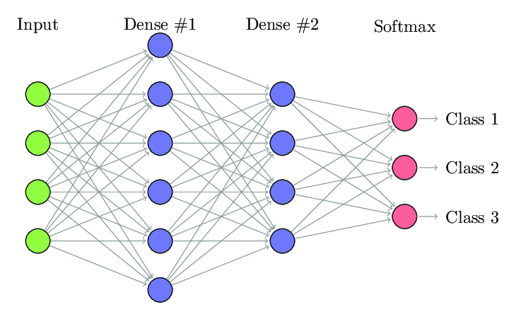
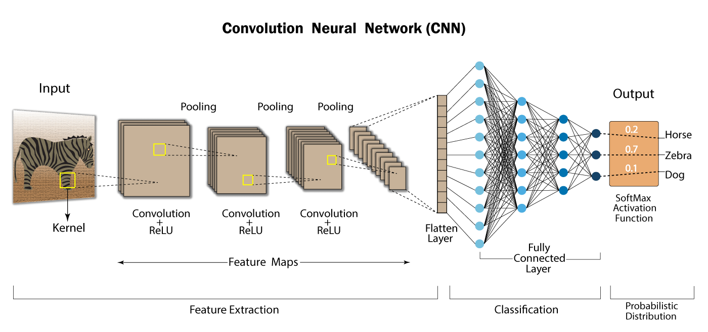
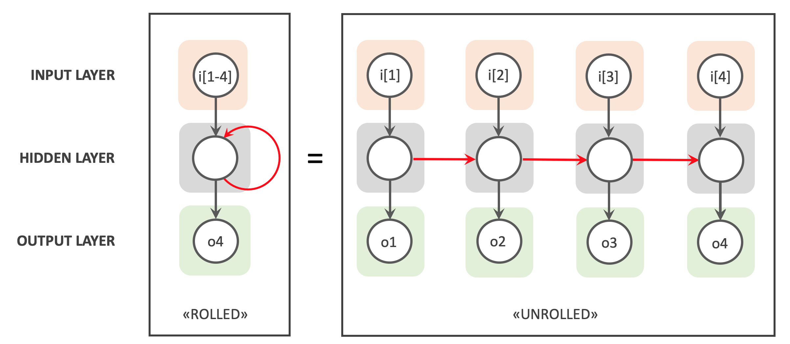

Les différents types de réseaux de neurones
Il existe différents types de réseaux de neurones, chacune ayant sa propre fonction et sa propre méthode de traitement des données d'entrée. Voici un aperçu de quelques types courants de couches de neurones :
Les réseaux de neurones denses (Fully Connected Layers)
Un réseau de neurones dense, également appelé réseau de neurones à couches entièrement connectées, est un type de réseau de neurones où chaque neurone dans une couche est connecté à tous les neurones de la couche précédente et de la couche suivante. Cela signifie que chaque neurone de la couche actuelle prend en compte toutes les activations de la couche précédente et renvoie une activation qui est propagée à tous les neurones de la couche suivante.

La sortie d'une couche dense est calculée comme suit :
où :
- \(y_j\) est la sortie du \(j\)-ème neurone de la couche dense.
- \(x_i\) est l'activation du \(i\)-ème neurone de la couche précédente.
- \(w_{ji}\) est le poids de la connexion entre le \(i\)-ème neurone de la couche précédente et le \(j\)-ème neurone de la couche dense.
- \(b_j\) est le biais (un paramètre supplémentaire) du \(j\)-ème neurone de la couche dense.
- \(f\) est la fonction d'activation appliquée à la somme pondérée des entrées.
- La fonction d'activation \(f\) peut être choisie en fonction du problème à résoudre.
Les réseaux de neurones convolutifs (Convolutional Neural Networks)
Les réseaux de neurones convolutifs (Convolutional Neural Networks ou CNNs) sont un type de réseau de neurones spécialement conçus pour le traitement des images. Ils ont été introduits pour la première fois par Yann LeCun et ses collègues en 1998 pour la reconnaissance de caractères manuscrits.
Les CNNs sont basés sur des filtres de convolution, qui sont des matrices de poids qui sont appliquées à des régions de l'image. Les filtres de convolution permettent d'extraire des caractéristiques visuelles à différentes échelles. Par exemple, un filtre de convolution peut être conçu pour détecter les bords dans une image, tandis qu'un autre filtre peut être conçu pour détecter les coins.
Un réseau de neurones convolutif se compose de plusieurs couches. La première couche est la couche d'entrée, qui contient l'image brute. Les couches suivantes sont des couches de convolution, qui appliquent des filtres de convolution à l'image. Chaque filtre de convolution produit une carte de caractéristiques, qui est une image qui met en évidence les caractéristiques spécifiques détectées par le filtre. Les cartes de caractéristiques sont ensuite passées à une fonction d'activation, qui introduit une non-linéarité dans le modèle.
Après les couches de convolution, il y a généralement des couches de regroupement (pooling layers), qui réduisent la dimensionnalité de l'image en prenant le maximum, la moyenne ou la somme de petites régions de l'image. Les couches de regroupement permettent de réduire le temps de calcul et de rendre le modèle plus robuste aux variations mineures dans l'image.
Après les couches de regroupement, il y a généralement des couches entièrement connectées (Fully Connected Layers), qui sont similaires aux couches de neurones denses des réseaux de neurones classiques. Les couches entièrement connectées prennent les cartes de caractéristiques en entrée et les transforment en une représentation de sortie qui est utilisée pour la classification ou la régression.
Les CNNs sont entraînés à l'aide d'un algorithme d'optimisation, tel que la descente de gradient stochastique (Stochastic Gradient Descent), pour minimiser une fonction de perte (loss function) qui mesure la différence entre la sortie prédite et la sortie réelle. Pendant l'entraînement, les poids des filtres de convolution et des couches entièrement connectées sont ajustés pour minimiser la fonction de perte.

L'équation pour la sortie d'une couche de convolution:
où :
- \(y(i,j,k)\) est la sortie du \(k\)-ème filtre à la position \((i,j)\) dans la carte de caractéristiques de sortie.
- \(\text{activation}\) est la fonction d'activation appliquée élément par élément à la somme des entrées pondérées.
- \(w(m,n,l,k)\) est le poids du \(k\)-ème filtre à la position \((m,n)\) dans le \(l\)-ème canal d'entrée.
- \(x(i+m-1,j+n-1,l)\) est l'activation d'entrée à la position \((i+m-1,j+n-1)\) dans le \(l\)-ème canal d'entrée.
- \(p,q,r\) sont les dimensions du filtre.
Les réseaux de neurones récurrents (Recurrent Neural Networks)
Un réseau de neurones récurrents (RNN) est un type de réseau de neurones qui est capable de traiter des séquences de données en utilisant la rétroaction (feedback) des sorties précédentes comme entrée pour les calculs futurs. Contrairement aux réseaux de neurones classiques, les RNN ont des connexions de neurones cycliques, ce qui leur permet de stocker une mémoire interne de l'information traitée jusqu'à présent.
Un RNN peut être représenté comme une séquence de cellules, où chaque cellule est une copie du même réseau de neurones. Chaque cellule prend en entrée les données de la séquence et l'état caché de la cellule précédente. L'état caché est une représentation vectorielle de la mémoire interne de la cellule, qui est mise à jour à chaque étape de la séquence.
La sortie de chaque cellule est renvoyée à la cellule suivante et est également utilisée pour la prédiction finale. La prédiction finale est donc basée sur l'ensemble des sorties de toutes les cellules de la séquence.

La sortie d'une cellule RNN est calculée comme suit :
où :
- \(h_t\) est l'état caché de la cellule à l'étape \(t\).
- \(x_t\) est l'entrée à l'étape \(t\).
- \(W_{xh}\) est la matrice de poids pour les connexions entre les entrées et l'état caché.
- \(W_{hh}\) est la matrice de poids pour les connexions entre l'état caché de l'étape précédente et l'état caché actuel.
- \(b_h\) est le biais ajouté à l'état caché.
- \(f\) est la fonction d'activation appliquée à la somme pondérée des entrées.
La sortie de la cellule peut également être utilisée pour prédire la prochaine valeur de la séquence :
où :
- \(y_t\) est la prédiction de la valeur de la séquence à l'étape \(t\).
- \(W_{hy}\) est la matrice de poids pour les connexions entre l'état caché et la prédiction.
- \(b_y\) est le biais ajouté à la prédiction.
- \(g\) est la fonction d'activation appliquée à la somme pondérée des entrées.
Les RNN sont largement utilisés pour la modélisation de séquences, notamment pour la reconnaissance de la parole, la traduction automatique et la génération de texte.
Les réseaux de neurones de mémoire à court terme (Long Short-Term Memory Networks)
Ce sont des réseaux de neurones récurrents améliorés qui permettent de traiter des séquences de données plus longues. Les réseaux de neurones de mémoire à court terme utilisent des unités de mémoire qui leur permettent de retenir l'information importante sur une longue période de temps, et sont utilisés pour la génération de texte, la prédiction de la prochaine valeur dans une série temporelle, etc.
Les réseaux de neurones auto-encodeurs (Autoencoder Neural Networks)
Ce sont des réseaux de neurones qui apprennent à reconstruire une entrée à partir d'une représentation latente, en comprimant l'information dans une couche cachée de neurones. Les réseaux de neurones auto-encodeurs sont utilisés pour la compression de données, la détection d'anomalies, etc.
Les réseaux de neurones génératifs (Generative Neural Networks)
Ce sont des réseaux de neurones qui apprennent à générer de nouvelles données à partir d'un ensemble de données d'entraînement. Les réseaux de neurones génératifs sont utilisés pour la génération de texte, d'images, de musique, etc.